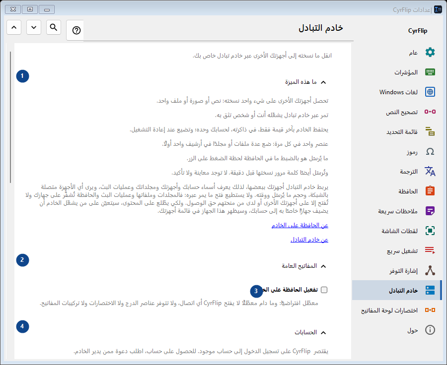
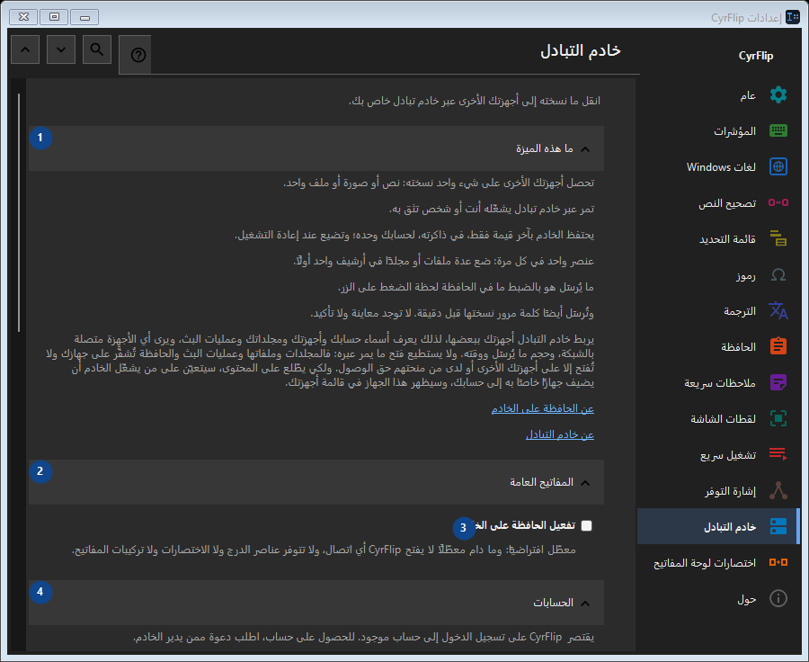

خادم التبادل
الغرض
انقل ما نسخته إلى أجهزتك الأخرى عبر خادم تبادل خاص بك.


ترتيب الاستخدام
تُطبق الإعدادات فورًا. لا يوجد ترتيب إلزامي؛ استخدم المجموعات أدناه.
العناصر
1. ما هذه الميزة
استخدم هذا الأمر لتنفيذ الإجراء المذكور. اقرأ أي طلب تأكيد قبل الموافقة.
اختصاراتك2. المفاتيح العامة
استخدم هذا الأمر لتنفيذ الإجراء المذكور. اقرأ أي طلب تأكيد قبل الموافقة.
اختصاراتك3. تفعيل الحافظة على الخادم
معطّل افتراضيًا: وما دام معطّلًا لا يفتح CyrFlip أي اتصال، ولا تتوفر عناصر الدرج ولا الاختصارات ولا تركيبات المفاتيح.
اختصاراتك4. الحسابات
استخدم هذا الأمر لتنفيذ الإجراء المذكور. اقرأ أي طلب تأكيد قبل الموافقة.
اختصاراتك5. إضافة حساب..
غير متاح ما دام «تفعيل الحافظة على الخادم» معطّلًا - فعّل ذلك المفتاح أولًا. هذا العنصر غير متاح حاليًا. فعّل الميزة أو اختر إدخالًا أولًا.
اختصاراتك6. الاختصارات
استخدم هذا الأمر لتنفيذ الإجراء المذكور. اقرأ أي طلب تأكيد قبل الموافقة.
اختصاراتك7. إرسال الحافظة إلى الخادم
غير متاح ما دام «تفعيل الحافظة على الخادم» معطّلًا - فعّل ذلك المفتاح أولًا. هذا العنصر غير متاح حاليًا. فعّل الميزة أو اختر إدخالًا أولًا.
اختصاراتك8. تغيير - إرسال الحافظة إلى الخادم
غير متاح ما دام «تفعيل الحافظة على الخادم» معطّلًا - فعّل ذلك المفتاح أولًا. هذا العنصر غير متاح حاليًا. فعّل الميزة أو اختر إدخالًا أولًا.
اختصاراتك9. الحصول على الحافظة من الخادم
غير متاح ما دام «تفعيل الحافظة على الخادم» معطّلًا - فعّل ذلك المفتاح أولًا. هذا العنصر غير متاح حاليًا. فعّل الميزة أو اختر إدخالًا أولًا.
اختصاراتك10. تغيير - الحصول على الحافظة من الخادم
غير متاح ما دام «تفعيل الحافظة على الخادم» معطّلًا - فعّل ذلك المفتاح أولًا. هذا العنصر غير متاح حاليًا. فعّل الميزة أو اختر إدخالًا أولًا.
اختصاراتك11. وضع «إرسال» على سطح المكتب
غير متاح ما دام «تفعيل الحافظة على الخادم» معطّلًا - فعّل ذلك المفتاح أولًا. هذا العنصر غير متاح حاليًا. فعّل الميزة أو اختر إدخالًا أولًا.
اختصاراتك12. وضع «استلام» على سطح المكتب
غير متاح ما دام «تفعيل الحافظة على الخادم» معطّلًا - فعّل ذلك المفتاح أولًا. هذا العنصر غير متاح حاليًا. فعّل الميزة أو اختر إدخالًا أولًا.
اختصاراتك13. الملفات المستلمة
استخدم هذا الأمر لتنفيذ الإجراء المذكور. اقرأ أي طلب تأكيد قبل الموافقة.
اختصاراتك14. مجلد الملفات المستلمة من الخادم
غير متاح ما دام «تفعيل الحافظة على الخادم» معطّلًا - فعّل ذلك المفتاح أولًا. هذا العنصر غير متاح حاليًا. فعّل الميزة أو اختر إدخالًا أولًا.
اختصاراتك15. اختيار - مجلد الملفات المستلمة من الخادم
غير متاح ما دام «تفعيل الحافظة على الخادم» معطّلًا - فعّل ذلك المفتاح أولًا. هذا العنصر غير متاح حاليًا. فعّل الميزة أو اختر إدخالًا أولًا.
اختصاراتك16. فتح المجلد - مجلد الملفات المستلمة من الخادم
غير متاح ما دام «تفعيل الحافظة على الخادم» معطّلًا - فعّل ذلك المفتاح أولًا. هذا العنصر غير متاح حاليًا. فعّل الميزة أو اختر إدخالًا أولًا.
اختصاراتك